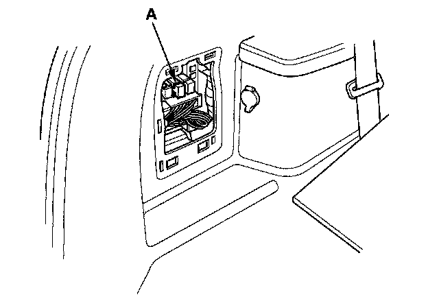

Operation CHARM
: Car repair manuals for everyone.
Home
>>
Acura
>>
2007
>>
MDX V6-3.7L
>>
Repair and Diagnosis
>>
Transmission and Drivetrain
>>
Transmission Control Systems
>>
Relays and Modules - Transmission and Drivetrain
>>
Relays and Modules - Differential
>>
Actuator Relay
>>
Service and Repair
Actuator Relay: Service and Repair
SH-AWD Relay Replacement
1.
Remove the rear left side trim panel cover.
2.
Remove the SH-AWD relay (A).

3.
Install the SH-AWD relay in the reverse order of removal.